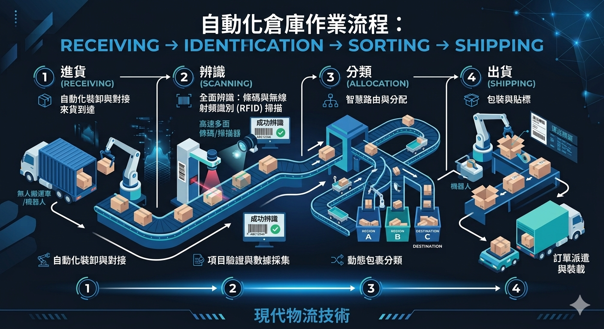
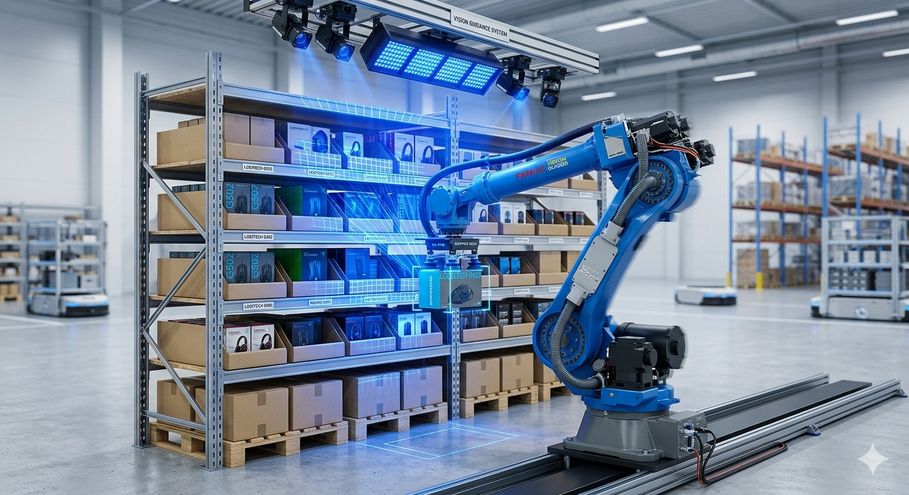

電商時代的物流壓力
電商訂單量逐年攀升,尤其在檔期活動時,倉儲常常面臨爆量。傳統倉儲高度依賴人力揀貨、分揀與掃碼,在人力吃緊、缺工的情況下,速度與準確率都很難再往上拉。
要在不無限擴編人力的前提下提升處理量,自動化幾乎是必走的路,而機器視覺正是讓自動化「看得懂現場」的關鍵。
視覺自動化的應用場景
在物流與電商倉儲中,機器視覺常見的應用包括:
- 條碼與標籤辨識:高速讀取包裹上的一維/二維碼,取代人工逐件掃描。
- 包裹分揀:辨識目的地資訊,導引包裹進入正確的分揀道口。
- 體積與重量量測:視覺量測包裹尺寸,協助材積計費與裝箱規劃。
- 破損與異常檢測:辨識外箱破損、標籤缺失或錯貼。

視覺導引揀貨
揀貨是倉儲中最耗人力的環節之一。透過視覺導引的機械手臂(Vision-Guided Robotics),系統能辨識貨架或料箱中商品的位置與姿態,導引手臂精準抓取。

相較於固定路徑的機械手臂,視覺導引能應付商品位置不固定、品項多樣的情況,特別適合品項眾多的電商倉。搭配深度學習辨識,系統面對新品項時也能快速適應。
導入自動化的評估重點
導入前建議先釐清幾件事:
- 品項特性:品項數量、外觀差異、包裝材質,決定辨識與抓取的難度。
- 處理量目標:每小時要處理多少件,影響設備選型與產線布局。
- 系統整合:視覺結果要如何與 WMS(倉儲管理系統)、輸送設備串接。
- 例外處理:讀碼失敗、抓取失敗或異常包裹要如何攔截與人工介入。
物流自動化的重點不是把人全部換掉,而是把重複、高強度的環節交給機器,讓人力專注在例外處理與流程優化上。
預期效益
導入視覺自動化後,物流與電商倉儲能得到幾項具體效益:
- 提升處理量:高速辨識與自動分揀,大幅縮短處理時間。
- 降低錯誤率:減少人工掃碼與分揀的漏件、錯件。
- 緩解缺工:把高強度的重複工作交給機器,降低對人力的依賴。
如果你的倉儲正面臨爆量、缺工或分揀錯誤的困擾,歡迎與我們聯絡,一起評估最適合的物流視覺自動化方案。